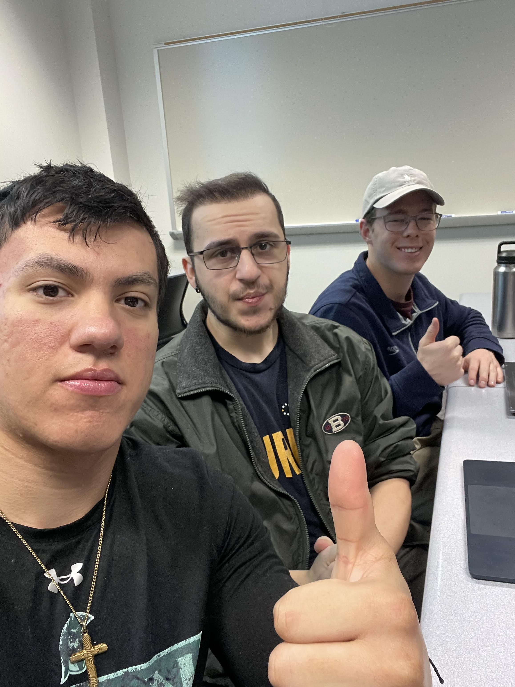

About Our Company
Ethan, Joel, and Logan - The Driving Force of InnovationWelcome to Git Bash'd, where creativity, expertise, and passion converge to shape the digital future. Allow us to introduce the brilliant minds behind our journey - Ethan, Joel, and Logan, co-owners and visionaries who collectively bring a wealth of experience and a shared commitment to excellence in website development.
The Strategic Architect
Ethan, with a background in computer science and a flair for strategic thinking, is the strategic architect of Git Bash'd. His forward-looking approach and meticulous planning lay the foundation for our projects' success. With a keen eye for emerging technologies, Ethan ensures that our solutions not only meet current industry standards but also anticipate future trends.
Joel - The Creative Maestro
Joel, our creative maestro, infuses every project with innovation and visual brilliance. Armed with a passion for design and a keen understanding of user experience, he transforms ideas into visually stunning and intuitive websites. Joel believes that aesthetics play a crucial role in leaving a lasting impression, and his designs are a testament to the seamless blend of form and function.
Logan - The Tech Virtuoso
Logan, the tech virtuoso, leads our development team with unparalleled expertise. His extensive knowledge of programming languages, frameworks, and a commitment to staying at the forefront of technological advancements ensure that our websites are not just beautiful but also robust and scalable. Logan thrives on overcoming technical challenges, turning complex concepts into streamlined, efficient code.
The Synergy of Three Minds
What sets Git Bash'd apart is the unique synergy between Ethan, Joel, and Logan. Their collective vision, diverse skill sets, and a shared commitment to client satisfaction create a powerhouse of creativity, strategy, and technical prowess. This dynamic trio leads our team with a shared philosophy of delivering exceptional results, every time.
As you embark on your digital journey with Git Bash'd, rest assured that you're in the capable hands of these three innovators. Their leadership guides us toward new horizons, ensuring that your web development experience is not just a project but a partnership in success.
Thank you for considering Git Bash'd. We look forward to the opportunity of turning your digital dreams into reality.
